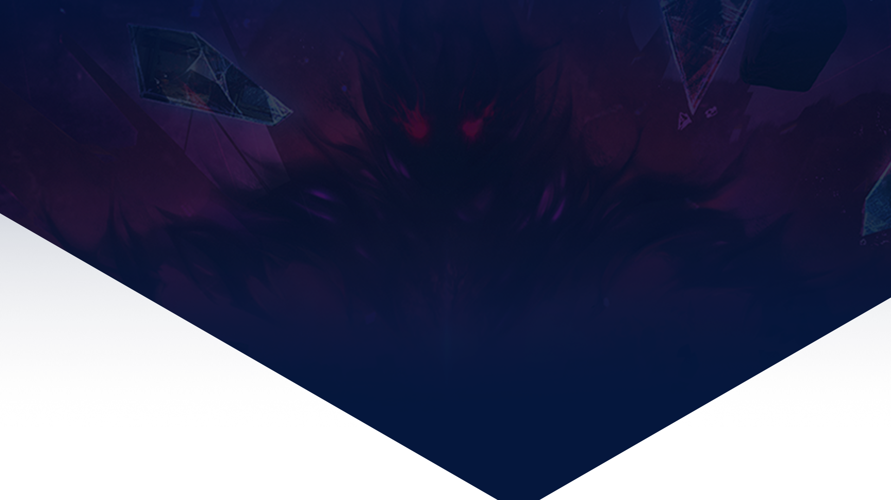

<div id="sign-in-redirect">
  <div
    class="bg-overlay absolute top-0 left-0 w-full main-page bg-[url('/assets/images/sign-in/sign-in-bg.jpg')] bg-cover bg-left h-full 2000px:w-full 2000px:h-full"
  >
    
  </div>
  <div class="container relative z-10 mx-auto min-h-screen flex-center">
    <div class="msg-box">
      <div
        class="sign-in-title mygg-title uppercase text-white text-center text-4xl xs:text-5xl tracking-widest mb-20"
      >
        <span class="mb-6">You need to log in</span>
        <div class="hidden md:block md:mb-6"></div>
        <span>to access the system</span>
      </div>
      <div class="confirm-button flex-center">
        <button
          class="transition text-white text-[1.5rem] px-9 py-2.5 rounded-[5px] font-['Myriad-Pro-Bold'] tracking-[1px] focus:outline-none focus:shadow-outline bg-[#660000] hover:bg-[#112349]"
          type="button"
          routerLink="/sign-in"
        >
          Back to login page
        </button>
      </div>
    </div>
  </div>
</div>
